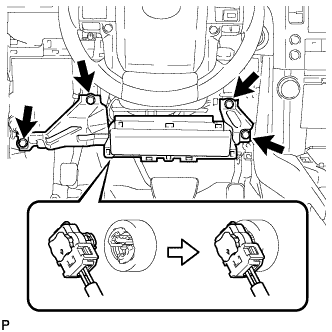

MAIN BODY ECU > INSTALLATION |
| 1. INSTALL MULTIPLEX NETWORK BODY ECU |
Insert the multiplex network body ECU until it contacts the housing sidewall of the guide part as shown in the illustration.
| *1 | Housing Sidewall |
| *2 | Guide Part |
 |
Slide the guide of the multiplex network body ECU along the housing sidewall toward the junction block fuses as shown in the illustration.
| *1 | Housing Sidewall |
| *2 | Guide Part |
| *3 | Junction Block Fuse |
Slide the multiplex network body ECU so that it contacts side A as shown in the illustration.
| *1 | Side A |
 |
With the multiplex network body ECU to side A of the junction block (point of rotation), rotate it downward as shown in the illustration.
| *1 | Side A Contact Portion |
Press the pushing area until the claw attaches to install the multiplex network body ECU.
| *1 | Pushing Area |
| 2. INSTALL DRIVER SIDE JUNCTION BLOCK ASSEMBLY |
Attach the claw to install the connector as shown in the illustration.
 |
Attach the 2 claws to lock the connector lock as shown in the illustration.
 |
Attach the claw to connect the connector as shown in the illustration.
Install the driver side junction block assembly with the bolt and 2 nuts.
 |
Connect the connector labeled (1).
Attach the 2 claws to connect the 2 connectors labeled (2) as shown in the illustration.
Connect the 3 connectors.
| 3. INSTALL LOWER NO. 1 INSTRUMENT PANEL AIRBAG ASSEMBLY |
|  |
Connect the connector.
Install the airbag assembly with the 4 bolts.
| 4. INSTALL LOWER INSTRUMENT PANEL FINISH PANEL SUB-ASSEMBLY |
 |
Using a screwdriver, detach the 2 claws and open the cover.
| *1 | Protective Tape |
 |
Remove the 2 bolts <C>.
Detach the 13 clips and 2 guides.
Disconnect each connector and cable and remove the lower instrument panel finish panel.
| 5. INSTALL NO. 1 INSTRUMENT PANEL REGISTER ASSEMBLY |
Attach the 5 clips to install the No. 1 instrument panel register.
| 6. INSTALL LOWER INSTRUMENT PANEL FINISH PANEL ASSEMBLY |
Connect each connector and cooler thermistor.
Attach the 4 clips to install the lower instrument panel finish panel.
| 7. INSTALL NO. 1 INSTRUMENT PANEL FINISH CUSHION |
Connect the connector.
Attach the 4 clips to install the No. 1 instrument panel finish cushion.
| 8. INSTALL NO. 2 SWITCH HOLE BASE |
Connect each connector.
Attach the 5 clips and claw to install the No. 2 switch hole base.
| 9. INSTALL INSTRUMENT SIDE PANEL LH |
Attach the 3 clips and 2 guides to install the instrument side panel.
| 10. INSTALL INSTRUMENT PANEL FINISH PANEL END LH |
Attach the 11 clips to install the instrument panel finish panel end.
| 11. INSTALL FRONT NO. 1 CONSOLE BOX INSERT |
Attach the 2 clips and guide to install the front No. 1 console box insert.
| 12. INSTALL NO. 1 INSTRUMENT PANEL UNDER COVER SUB-ASSEMBLY |
Connect the connector and attach the clamp.
Attach the 2 clips and 2 guides to install the No. 1 instrument panel under cover.
Install the screw.
| 13. INSTALL COWL SIDE TRIM BOARD LH |
Attach the clip and claw to install the cowl side trim board.
Install the clip.
| 14. INSTALL DOOR SCUFF PLATE ASSEMBLY LH |
Connect the connector.
Attach the 4 clips, 10 claws and 2 guides to install the door scuff plate.
| 15. CONNECT CABLE TO NEGATIVE BATTERY TERMINAL |
| 16. CHECK SRS WARNING LIGHT |
Check the SRS warning light (Click here).